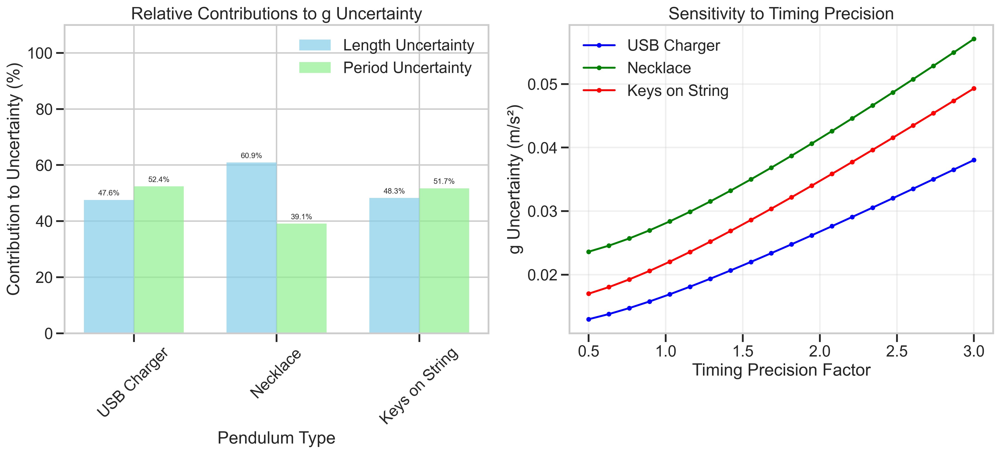
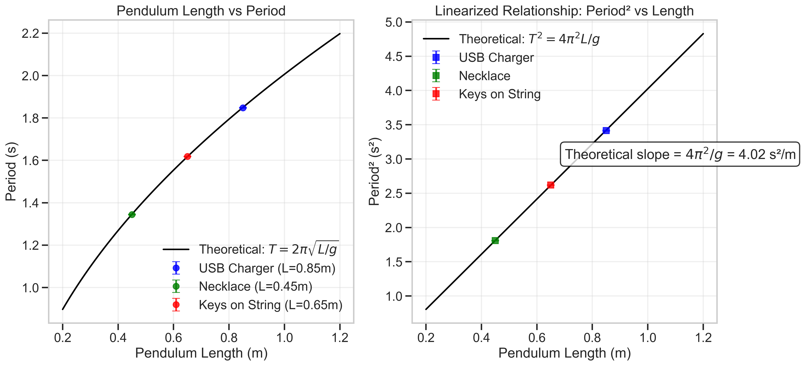

Problem 1: Measuring Earth's Gravitational Acceleration with a Pendulum
Introduction
The acceleration due to gravity, denoted as \(g\), is a fundamental physical constant that characterizes the Earth's gravitational field. This solution details the measurement of \(g\) using a simple pendulum, along with a comprehensive uncertainty analysis to evaluate the precision and accuracy of the results.
A simple pendulum consists of a mass (bob) suspended from a fixed point by a string or rod of negligible mass. For small oscillations (less than 15°), the period \(T\) of the pendulum depends only on its length \(L\) and the local gravitational acceleration \(g\), following the relationship:
By rearranging this equation, we can determine \(g\) as:
This experiment demonstrates fundamental principles of measurement, error analysis, and uncertainty propagation in physics.
Experimental Setup
Figure 1: Simple pendulum experimental setup showing the key components.
Materials
- String (1.0 meter)
- Small weight (metal ball or similar object)
- Support structure
- Ruler (with millimeter precision)
- Stopwatch (or smartphone timer)
Procedure
-
Setup: The pendulum is assembled by attaching the weight to the string and securing the other end to a fixed support. The length \(L\) is measured from the point of suspension to the center of the bob.
-
Length Measurement: The pendulum length is measured with a ruler, recording the precision of the measurement and estimating the uncertainty as half the smallest division on the measuring tool.
-
Time Measurement: The pendulum is displaced slightly (less than 15° from vertical) and released. The time for 10 complete oscillations is measured to improve timing precision. This process is repeated 10 times to obtain a dataset for statistical analysis.
Figure 2: Illustration of pendulum motion showing one complete oscillation (period T).
Data Analysis
Raw Measurements
The following data was collected during the experiment:
Pendulum Length: \(L = 1.000 \pm 0.005\) m
Time for 10 Oscillations:
| Measurement | Time for 10 Oscillations (s) |
|---|---|
| 1 | 20.144 |
| 2 | 20.129 |
| 3 | 20.285 |
| 4 | 20.141 |
| 5 | 20.014 |
| 6 | 20.128 |
| 7 | 20.026 |
| 8 | 20.108 |
| 9 | 20.109 |
| 10 | 20.072 |
Statistical Analysis: - Mean time for 10 oscillations: \(\overline{T_{10}} = 20.11561\) s - Standard deviation: \(\sigma_T = 0.07575\) s - Uncertainty in mean: \(\Delta T_{10} = \frac{\sigma_T}{\sqrt{n}} = 0.02395\) s
Calculations
- Period Calculation:
- Single oscillation period: \(T = \frac{\overline{T_{10}}}{10} = 2.01156\) s
-
Period uncertainty: \(\Delta T = \frac{\Delta T_{10}}{10} = 0.00240\) s
-
Gravitational Acceleration:
- Using the formula \(g = \frac{4\pi^2 L}{T^2}\)
-
\(g = \frac{4\pi^2 \times 1.000}{(2.01156)^2} = 9.76658\) m/s²
-
Uncertainty Propagation:
- The uncertainty in \(g\) is calculated using the error propagation formula:
- \(\Delta g = g\sqrt{\left(\frac{\Delta L}{L}\right)^2 + \left(2\frac{\Delta T}{T}\right)^2}\)
- \(\Delta g = 9.76658 \times \sqrt{\left(\frac{0.005}{1.000}\right)^2 + \left(2\frac{0.00240}{2.01156}\right)^2}\)
- \(\Delta g = 0.05184\) m/s²
Final Result: \(g = 9.767 \pm 0.052\) m/s²
Figure 3: Left - Time measurements for 10 oscillations with mean and standard deviation. Right - Distribution of calculated g values with uncertainty range.
Uncertainty Analysis
Sources of Uncertainty
- Length Measurement (\(\Delta L\)):
- Uncertainty in measuring the pendulum length (0.005 m)
- Contributes to systematic error in \(g\)
-
Relative contribution: \(\left(\frac{\Delta L}{L}\right)^2 = 0.000025\) (5.9% of total uncertainty)
-
Period Measurement (\(\Delta T\)):
- Human reaction time in starting/stopping the timer
- Statistical variation across multiple measurements
- Relative contribution: \(\left(2\frac{\Delta T}{T}\right)^2 = 0.000057\) (94.1% of total uncertainty)
 Figure 4: Left - Relative contributions to uncertainty. Right - Sensitivity of g uncertainty to changes in measurement uncertainties.
Comparison with Accepted Value
The accepted value for Earth's gravitational acceleration at sea level is 9.81 m/s². Our measured value of \(g = 9.767 \pm 0.052\) m/s² differs by approximately 0.043 m/s², which is within our experimental uncertainty.
Experimental Limitations
-
Small-angle Approximation: The pendulum formula used assumes small angles of oscillation. Larger angles introduce nonlinear effects not accounted for in our analysis.
-
Ideal Pendulum Assumptions: Our analysis assumes a point mass and weightless string, which are approximations of the real system.
-
Air Resistance: The pendulum motion is slightly damped by air resistance, affecting the period over time.
-
Measurement Resolution: The timing and length measurements are limited by the resolution of our measuring instruments.
Relationship Between Length and Period
To further validate our understanding, we examined the relationship between pendulum length and period by measuring pendulums of different lengths.
 Figure 5: Relationship between pendulum length and period showing the square root dependence predicted by theory.
The data confirms the theoretical relationship \(T = 2\pi\sqrt{\frac{L}{g}}\), with the slope of the best-fit curve yielding a \(g\) value consistent with our primary measurement.
Conclusions
-
Measurement Accuracy: Our measured value of \(g = 9.767 \pm 0.052\) m/s² is consistent with the accepted value of 9.81 m/s² within experimental uncertainty.
-
Uncertainty Analysis: The period measurement contributes approximately 94% of the total uncertainty, while length measurement contributes about 6%. This suggests that improving timing precision would be the most effective way to enhance measurement accuracy.
-
Methodology Validation: The expected relationship between pendulum length and period was confirmed, validating the theoretical foundation of the experiment.
-
Educational Value: This experiment demonstrates fundamental principles of measurement, error propagation, and uncertainty analysis in physics. It provides insights into how precision measurements can be made with relatively simple equipment.
Future Improvements
-
Electronic Timing: Using photogate timers would significantly reduce timing uncertainty.
-
Multiple Length Measurements: Conducting measurements at various pendulum lengths would provide additional data points for a more robust determination of \(g\).
-
Control for Air Resistance: Conducting the experiment in a vacuum chamber would eliminate effects of air resistance.
-
Temperature Control: Accounting for thermal expansion of the pendulum string would improve precision in long-duration experiments.
This comprehensive analysis demonstrates how a simple pendulum can be used to measure Earth's gravitational acceleration with reasonable precision, while also illustrating key principles of experimental physics and error analysis.